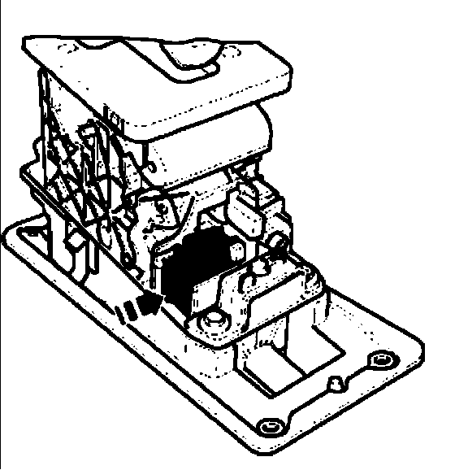

Procedures
Selector lever park position solenoid N380 releasing with no electrical power

- Move solenoid core in direction of - arrow -
Note:
^ This is often possible from above using a very long thin screwdriver.
- If this is not possible, install ashtray and shift mechanism cover in the center console
Storage compartments, covers and panels. Refer to Center console, removing and installing.